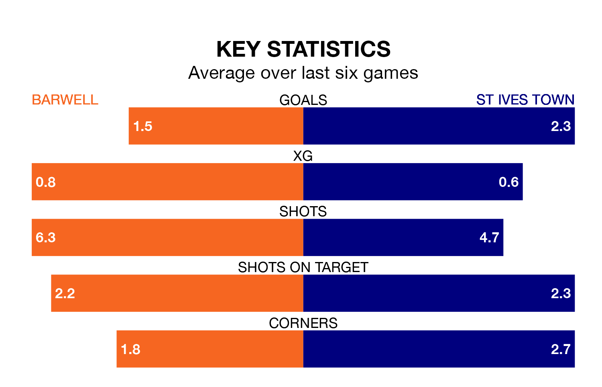

St Ives Town travel to Barwell on Saturday in the Southern League Premier Central.
The visitors come into the game on the back of a defeat in their last match, having lost to Stamford 4-1 at home.
Barwell, meanwhile, won their last match, 3-0 against Long Eaton United.
With 77 goals in 38 games so far this season, St Ives are the league's highest scorers with 2.0 goals per game. But they are conceding more than average too, letting in 62 goals at a rate of 1.6 per game.
Barwell are also above average scorers, with 1.6 goals per game, compared to a league average of 1.5. They have conceded 1.5 goals per game.
In the last 10 years, Barwell and St Ives have played each other on eight occasions. Barwell won four of them, St Ives two, and they drew twice.
On average, Barwell scored 2.0 goals and St Ives 1.6 in those matches.
Their last meeting was on November 27, when St Ives won 3-1 at home.
Town are eighth in the table after 38 games, of which they have won 17 and drawn four, earning 55 points.
The home team are two places behind the visitors in 10th, with 13 wins and 11 draws putting them on 50 points.
Barwell are in mixed form in the Southern League Premier Central, with three wins and three losses from their last six games.
With three wins and a draw over that period, St Ives's form is slightly better – they have taken 10 points from 18, compared to Barwell's nine.
Updated: 16:41 (UTC), 04/04/24